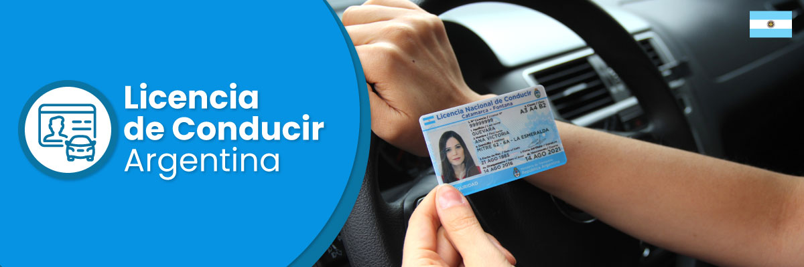

Es un servicio exclusivo para los vecinos con domicilio real en
la ciudad de Chamical y Patquía.
Lugar de atención para Solicitud de Licencia de Conducir
- Municipalidad del Dpto. Chamical: Calle Peron N° 50.
Dias y Horarios:
- Lunes a Viernes: Mañana: 8:00 a 12:30hs. Tarde: 17:00 a 21:00hs.
Realizar el Curso de Seguridad Vial
Requisitos para otorgamiento de la licencia nacional de conducir
Otorgamiento por primera vez o vencimiento superior a los 90 días.
Licencia de clase A y B de uso particular por primera vez:
PRESENTAR:
- 2 fotocopias de DNI
- Constacia de Grupo Sanguineo
- Boleta-Ticket de pago del CENAT
- Generar boleta CENAT en ARGENTINA.GOB.AR
- Autorización legal (para menores de 18 años)
- Folio
- Curso de Educaión Vial aprobado
REQUISITOS:
- Contar con buen estado de salud para conducir
- Contar con domicilio en
- Disponer de vehículo para el curso de practica de Educación Vial
- Traer Cédula de el o los vehículos
CLASE A:
- Motovehículos
- Triciclos
- Cuatriciclos
CLASE B
Licencia de clase C, D, E y G de uso profesional:
PRESENTAR:
- 2 fotocopias de DNI
- Constacia de CUIL
- 1 fotocopia de la licencia anterior
- Boleta-Ticket de pago del CENAT
- Folio
- Certificado de antecedentes penales (solo clase "D")
REQUISITOS:
- Saber leer y escribir
- Contar con buen estado de salud para conducir
- Contar con domicilio en
- Aprobar el Curso Nacional de Educación Vial
- No se acepta el comprobante de proceso en tramite del Certificado de Antecedentes Personales
- Contar con licencia particular de auto mínimo un año
- Traer Cédula de el o los vehículos
- Generar boleta CENAT en ARGENTINA.GOB.AR
Renovación:
Este trámite se realiza de que la licencia cumpla 90 días corridos desde la fecha de vencimiento.
PRESENTAR:
- 2 fotocopias de DNI
- Constacia de CUIL
- 1 fotocopia de la licencia anterior
- Boleta-Ticket de pago del CENAT
- Folio
- Certificado de antecedentes penales (solo clase "D")
- Generar boleta CENAT en ARGENTINA.GOB.AR
REQUISITOS:
- Contar con buen estado de salud para conducir
- Contar con domicilio en
- Traer célula del o los vehículos
- Aprobar el Curso Nacional de Educación Vial
- No se acepta el comprobante de proceso en tramite del Certificado de Antecedentes Personales
- Contar con licencia particular de auto mínimo un año
Duplicado y Triplicado:
Este trámite se realiza ante un extravio, robo o deterioro de la licencia de conducir vigente.
PRESENTAR:
- 2 fotocopias de DNI
- Constacia de CUIL
- Denuncia de extravio
- Boleta-Ticket de pago del CENAT
- Folio
- Comprobante de pago de Rentas de la Licencia extraviada
REQUISITOS:
- Contar con buen estado de salud para conducir
- Contar con domicilio en
- Traer célula del o los vehículos
- Certificado de extravio de la Policia
- Comprobante de pago / comprobante de rentas (solictar en oficina de Rentas Municipal)
- Generar boleta CENAT en ARGENTINA.GOB.AR
- Disponer de vehículo para el curso práctico
-Si sos menor de 18 años, tenés que estar autorizado por tu representante legal (padre, madre o tutor)
-Los deudores alimentarios no pueden acceder a la licencia de conducir.
Pasos a Seguir:
- Presentarse en el Cepar más cercano a tu domicilio con toda
la documentación requerida y soliitar Turno para realizar el
Curso Nacional de Seguridad Vial
- Realizar el pago del CENAT
- Solicitar certificado de antecedentes penales
(solo para licencia de conducir Clase D)
- El trámite para Licencia de Conducir es por orden de llegada
- Presentar toda la docuemntación solicitada en el Centro de Emisión de Licencia
- Abonar el timbrado municipal en la ofifina de Rentas Municipal
- Realizar el examen psicofísico/psicológico
- Examen practico de detección de fallas
- Recepción de tarjeta-carnet Licencia de Conducir solicitada
- Listo! ya tienes tu Licencia de Conducir